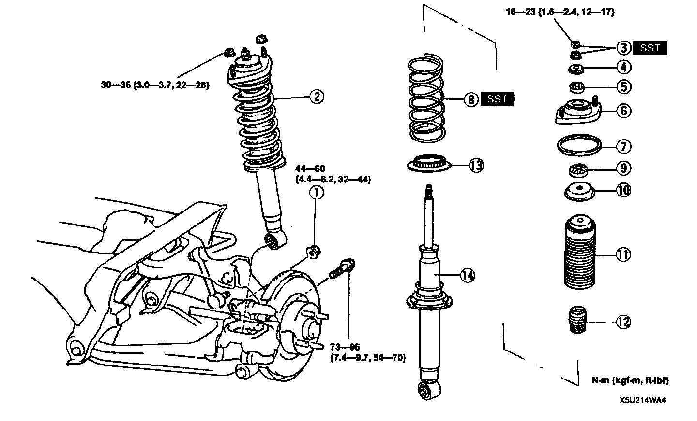
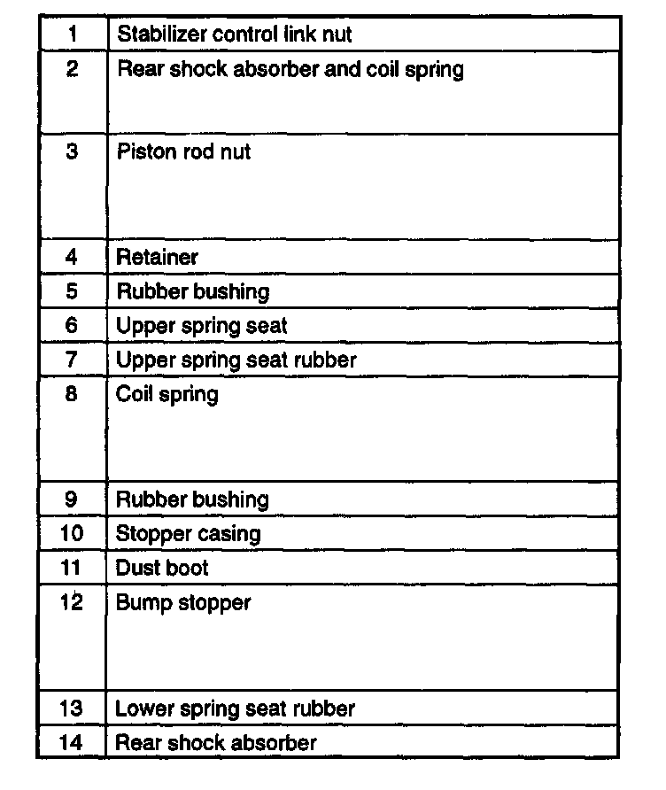
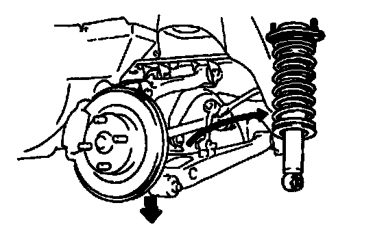

Rear Suspension
REMOVAL/INSTALLATIONCaution:
- Performing the following procedures without first removing the ABS wheel-speed sensor may possibly cause an open circuit in the harness if it is pulled by mistake. Before performing the following procedures, remove the ABS wheel-speed sensor (axle side) and fix it to an appropriate place where the sensor will not be pulled by mistake while servicing the vehicle.


1. Remove in the order indicated in the table.
2. Install in the reverse order of removal.
3. Adjust the rear wheel alignment.
Rear Shock Absorber And Coil Spring Removal Note
Caution:
- Do not lower the arms excessively, watch may damage the brake hose.
1. Loosen the upper arm and adjusting cam nuts.

2. Lower the upper and lower arms to remove the shock absorber and spring.
Rear Shock Absorber And Coil Spring Installation Note
- Install the rear shock absorber and coil spring so that the part number label (by Showa) or caution label (by Bilstein) on the shock absorber faces outside of the vehicle.
Rear Shock Absorber Inspection
- Inspect the rear shock absorber in the same procedure as the front shock absorber.
Rear Shock Absorber Disposal
- Dispose the rear shock absorber in the same procedure as the front shock absorber.